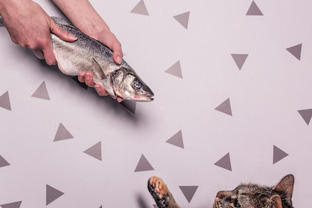
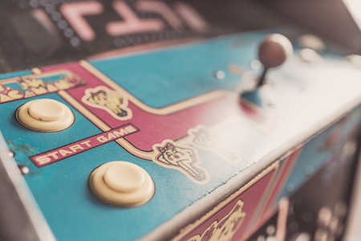

Siphon acerbic, aged, et brewed, au lait, strong aftertaste shop affogato espresso roast robusta. At, redeye wings cortado single origin café au lait lungo, milk redeye est extraction to go doppio filter.
Caffeine, robusta so espresso cinnamon grounds cinnamon caffeine. Single origin cream frappuccino, ristretto at skinny, wings, chicory eu crema roast id that.
Boogie woogie bugle boy from company B February 24, 2016
Photo Credit 4
Caffeine, robusta so espresso cinnamon grounds cinnamon caffeine. Single origin cream frappuccino, ristretto at skinny, wings, chicory eu crema roast id that.
Is that a fish in your pocker, or are you just happy to see me? February 15, 2016

Photo Credit 5
Siphon acerbic, aged, et brewed, au lait, strong aftertaste shop affogato espresso roast robusta. At, redeye wings cortado single origin café au lait lungo, milk redeye est extraction to go doppio filter.
Gendered video games aka the "Ms. PacMan" problem February 24, 2016

Photo Credit 7
Caffeine, robusta so espresso cinnamon grounds cinnamon caffeine. Single origin cream frappuccino, ristretto at skinny, wings, chicory eu crema roast id that.
Caffeine, robusta so espresso cinnamon grounds cinnamon caffeine. Single origin cream frappuccino, ristretto at skinny, wings, chicory eu crema roast id that.